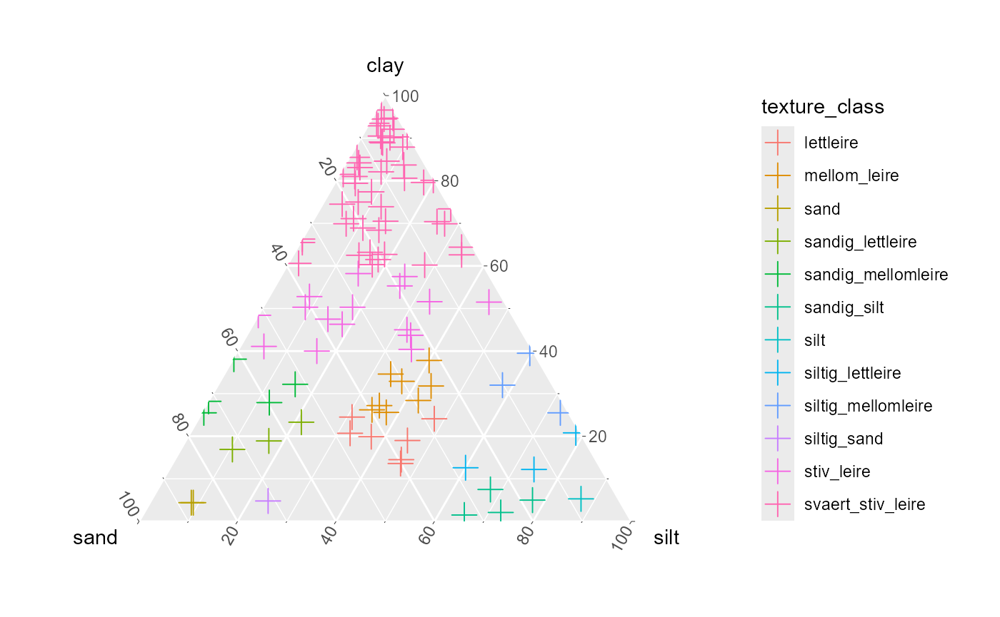

vignettes/Norwegian_Soil_Classification.Rmd
Norwegian_Soil_Classification.RmdAuthor: Moritz Shore
Date: November, 2022
Classifies soils based off of clay, silt, sand fractions using USDA (Ditzler, Scheffe, & Monger, 2017) or Norwegian (Sveistrup & Njøs, 1984) systems.
Figure 1: Soil classificatio based on the Norwegian (left) and USDA (right) systems.
The function has the following features:
Automatically Compatible with csv or xlsx. Tries to automatically guess format of data, and acts accordingly.
Automatically rounds total fraction to 100%, if differences are under 1%.
Exports classification based on user settings
Creates an interactive diagnostic plot, as well as saving one to output directory.
Note: the script will automatically try to identify which columns contain the clay, silt, sand fractions and also try to identify which format they are in. If this does not work, you might get incorrect or flawed results, so make sure to READ what THE CONSOLE prints out, to make sure it did the correct things. If the script cannot read your file automatically, then the following format is recommended:
A simple usage is shown below. for a more in-depth run down of the arguments please visit the function help page.
# for demonstration purposes, use path of package
example_file_path <- system.file(package = "miljotools", "/extdata/soil_classify/example.csv")
classify_soil(
input = example_file_path,
output = "output_file.csv",
version = "NOR",
plot_result = T,
interactive = FALSE,
decimal = ".",
write = FALSE # false just for demonstration.
)
#> Identifying column: sand
#> sand column identified as ' sand ' index= 3
#> > mean value of sand column is 25
#> Assuming values are in PERCENT form. ie. 43.1% (instead of 0.431)
#> Identifying column: silt
#> silt column identified as ' silt ' index= 4
#> > mean value of silt column is 23.1
#> Assuming values are in PERCENT form. ie. 43.1% (instead of 0.431)
#> Identifying column: clay
#> clay column identified as ' clay ' index= 2
#> > mean value of clay column is 51.9
#> Assuming values are in PERCENT form. ie. 43.1% (instead of 0.431)
#>
#>
#> Checking for fraction sums over 100 %:
#> > 0 entries have a fractional sum of over 100.
#> > 0 entries have a fractional sum of under 100.
#> adjusting the sand fraction and rounding...
#>
#> > classifiying NORWEGIAN textures
#> [1] "C:/Users/mosh/Documents/GIT/miljotools/vignettes/output_file.csv"